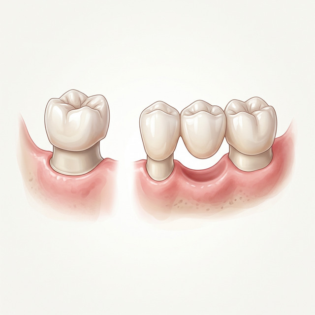
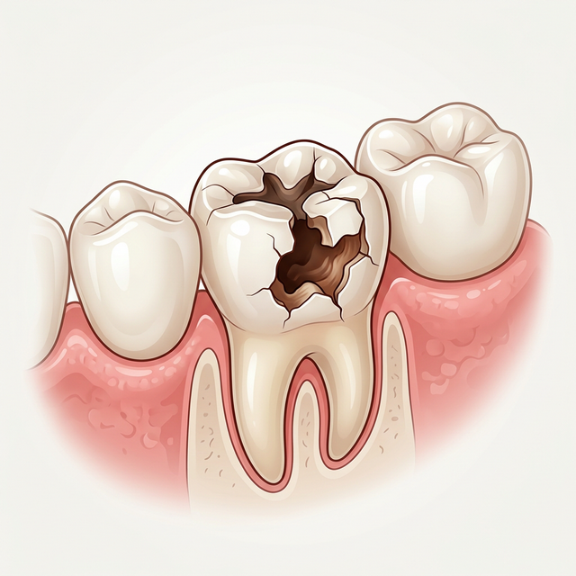

Crowns & Bridges
Precision-crafted restorations that protect damaged teeth and seamlessly replace missing ones — bringing back full function and a natural smile.

What Are Crowns & Bridges?
Dental crowns and bridges are two of the most reliable solutions in restorative dentistry. Crowns are tooth-shaped caps placed over a damaged tooth to protect and strengthen it, restoring its original shape and function. Bridges span the gap left by one or more missing teeth, anchored securely to the teeth on either side.
Both are typically crafted from porcelain, ceramic, or zirconia, carefully shade-matched to blend seamlessly with your natural teeth for a result that is both beautiful and durable.
Crown or Bridge — Which Do You Need?
While both restore the look and function of your teeth, they serve different purposes depending on your specific situation.

C Dental Crown
A crown is used when a tooth is still present but is severely damaged, decayed, cracked, or weakened after a root canal. It fits over the original tooth like a protective cap, restoring full strength, shape, and appearance. With a crown, you keep your natural root — which preserves bone and overall jaw health.

B Dental Bridge
A bridge is the solution when a tooth is completely missing. It consists of two crowns placed on the teeth flanking the gap (the abutment teeth), with a false tooth (pontic) suspended between them. This creates a fixed, stable replacement that looks and functions like a natural tooth.
Common Reasons for Crowns & Bridges


What Happens During Your Visit
.png)
1 Examination & Planning
We begin with a thorough examination including X-rays to assess the condition of the tooth and surrounding bone. We then discuss the best type of crown or bridge material for your specific case and aesthetic goals.
.png)
2 Tooth Preparation
The tooth is gently reshaped under local anesthesia to create space for the crown. Impressions are taken of the prepared tooth and sent to our lab for precision fabrication. A temporary crown protects your tooth in the meantime.
.png)
3 Lab Fabrication
Our dental lab crafts your permanent crown or bridge from high-quality porcelain or zirconia, custom shade-matched to blend with your natural teeth. This process typically takes 1–2 weeks to complete.
.png)
4 Permanent Placement
The temporary crown is removed, and your permanent restoration is carefully fitted, adjusted for bite alignment, and permanently cemented in place. We check every detail to ensure it feels comfortable and looks completely natural.
What You May Feel


Looking After Your Crown or Bridge
With the right care, a well-made crown or bridge can last 10–15 years or longer. Here's how to protect your investment:
- Maintain oral hygiene: Brush and floss daily, paying extra attention around the crown margins and under the bridge (use a floss threader or interdental brush for bridges).
- Avoid hard or sticky foods: Do not bite directly on hard foods like ice or hard nuts with the restored tooth. Avoid sticky toffees or chewing gum that can pull at the restoration.
- Use fluoride: Fluoride toothpaste and mouthwash help strengthen the remaining natural tooth structure underneath the crown and prevent secondary decay.
- Schedule regular dental visits: Routine check-ups allow us to monitor the margins of your crown or bridge for early signs of wear, leakage, or secondary decay.
- Wear a mouthguard if needed: If you grind or clench your teeth at night (bruxism), a custom night guard protects both your crown and natural teeth from excessive wear.
- Act promptly on symptoms: If you notice persistent pain, sensitivity, a shift in your bite, or any visible damage to the restoration, contact us promptly for an assessment.
Frequently Asked Questions
With proper care, dental crowns and bridges typically last 10–15 years or longer. Their longevity depends on the material used, your bite forces, and how consistently you maintain good oral hygiene and attend regular check-ups.
Tooth preparation for a crown is carried out under local anesthesia, so you should feel nothing beyond mild pressure during the procedure. Any post-procedure sensitivity is typically mild and resolves within a few days. We ensure your comfort throughout every stage.
A veneer covers only the front surface of a tooth and is used primarily for cosmetic improvement. A crown covers the entire tooth, providing structural protection and full restoration of function. Crowns require more tooth reduction but are far more durable and appropriate for significantly damaged teeth.
The crown itself cannot decay, but the natural tooth underneath it can — particularly at the margin (edge) where the crown meets the gum line. This is why brushing properly around the base of the crown and attending regular check-ups is so important.
Root canal treatment removes the pulp that supplies the tooth with nutrients, leaving the tooth more brittle over time. A crown encases the treated tooth, distributing bite forces evenly and preventing it from cracking under normal chewing pressure. It is the standard of care for root canal treated back teeth.
Both are excellent options. An implant is generally considered the gold standard — it replaces the root, preserves bone, and does not affect adjacent teeth. A bridge avoids surgery and is placed faster. We will assess your bone health, budget, and timeline and recommend the best solution for your specific situation.
Restore Strength. Restore Beauty.
Whether you need to protect a damaged tooth or replace a missing one, our precision-crafted crowns and bridges deliver lasting results you can smile about.
Get in Touch
We're ready to discuss your personalized care plan. Fill out the form or reach us directly.